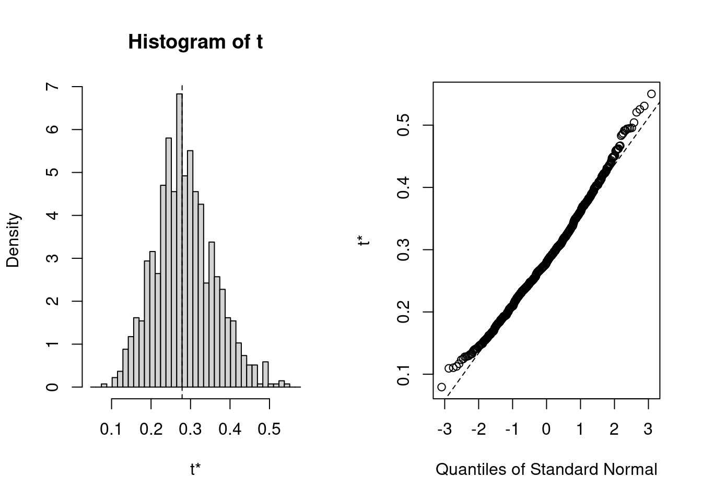

library(MuMIn) # for computing multilevel R-squaredlibrary(r2mlm) # another package for R-squared
Loading required package: nlme
Attaching package: 'nlme'
The following object is masked from 'package:lme4':
lmList
library(bootmlm) # for multilevel bootstrappinglibrary(boot) # for bootstrap CIs
An Example Multilevel Model
fm1 <-lmer(Reaction ~ Days + (Days | Subject), sleepstudy)
Nakagawa-Johnson-Schielzeth \(R^2\)
r.squaredGLMM(fm1)
Warning: 'r.squaredGLMM' now calculates a revised statistic. See the help page.
R2m R2c
[1,] 0.2786511 0.7992199
The marginal \(R^2\) considers the total variance accounted for due to the fixed effect associated with the predictors (Days in this example). See Nakagawa, Johnson, & Schielzeth (2017) for more information.
$Decompositions
total
fixed 0.27851304
slope variation 0.08915267
mean variation 0.43165365
sigma2 0.20068063
$R2s
total
f 0.27851304
v 0.08915267
m 0.43165365
fv 0.36766572
fvm 0.79931937
The fixed part is the same as the marginal \(R^2\).
Confidence Intervals for \(R^2\)
Neither MuMIn::r.squaredGLMM() nor r2mlm::r2mlm() provided confidence intervals (CIs) for the \(R^2\), but general guidelines for effect size reporting would suggest always reporting CIs for point estimates of effect size, just like for any point estimates in statistics. We can use multilevel bootstrapping to get CIs.
To do bootstrap, first defines an R function that gives the target \(R^2\) statistics. We can do it for the marginal \(R^2\):
19 message(s): boundary (singular) fit: see help('isSingular')
7 warning(s): Model failed to converge with max|grad| = 0.00239607 (tol = 0.002, component 1) (and others)
Here is the bootstrap distribution
plot(boo01)

Bias-corrected estimate
The above shows that the sample estimate of \(R^2\) was upwardly biased. To correct for the bias, we can use the bootstrap bias-corrected estimate
2* boo01$t0 -mean(boo01$t)
[1] 0.2721097
Confidence intervals
You can get three types of bootstrap CIs ("norm", "basic", "perc") with bootMer:
boot::boot.ci(boo01, index =1, type =c("norm", "basic", "perc"))
BOOTSTRAP CONFIDENCE INTERVAL CALCULATIONS
Based on 999 bootstrap replicates
CALL :
boot::boot.ci(boot.out = boo01, type = c("norm", "basic", "perc"),
index = 1)
Intervals :
Level Normal Basic Percentile
95% ( 0.1241, 0.4202 ) ( 0.1079, 0.4108 ) ( 0.1465, 0.4494 )
Calculations and Intervals on Original Scale
Residual Bootstrap
The bootmlm::bootstrap_mer() implements the residual bootstrap, which is robust to non-normality.
# This takes about 30 sec on my computerboo02 <-bootstrap_mer(fm1, FUN = marginal_r2, nsim =999, type ="residual")
18 message(s) : boundary (singular) fit: see help('isSingular')
1 warning(s) in checkConv(attr(opt, "derivs"), opt$par, ctrl = control$checkConv, lbound = lower) : Model failed to converge with max|grad| = 0.00211361 (tol = 0.002, component 1)
1 warning(s) in checkConv(attr(opt, "derivs"), opt$par, ctrl = control$checkConv, lbound = lower) : Model failed to converge with max|grad| = 0.00217517 (tol = 0.002, component 1)
1 warning(s) in checkConv(attr(opt, "derivs"), opt$par, ctrl = control$checkConv, lbound = lower) : Model failed to converge with max|grad| = 0.002215 (tol = 0.002, component 1)
1 warning(s) in checkConv(attr(opt, "derivs"), opt$par, ctrl = control$checkConv, lbound = lower) : Model failed to converge with max|grad| = 0.00255425 (tol = 0.002, component 1)
1 warning(s) in checkConv(attr(opt, "derivs"), opt$par, ctrl = control$checkConv, lbound = lower) : Model failed to converge with max|grad| = 0.00258348 (tol = 0.002, component 1)
1 warning(s) in checkConv(attr(opt, "derivs"), opt$par, ctrl = control$checkConv, lbound = lower) : Model failed to converge with max|grad| = 0.00275089 (tol = 0.002, component 1)
1 warning(s) in checkConv(attr(opt, "derivs"), opt$par, ctrl = control$checkConv, lbound = lower) : Model failed to converge with max|grad| = 0.00410731 (tol = 0.002, component 1)
1 warning(s) in checkConv(attr(opt, "derivs"), opt$par, ctrl = control$checkConv, lbound = lower) : Model failed to converge with max|grad| = 0.00438296 (tol = 0.002, component 1)
1 warning(s) in checkConv(attr(opt, "derivs"), opt$par, ctrl = control$checkConv, lbound = lower) : Model failed to converge with max|grad| = 0.00940885 (tol = 0.002, component 1)
1 warning(s) in checkConv(attr(opt, "derivs"), opt$par, ctrl = control$checkConv, lbound = lower) : Model failed to converge with max|grad| = 0.0109771 (tol = 0.002, component 1)
boo02
ORDINARY NONPARAMETRIC BOOTSTRAP
Call:
bootstrap_mer(x = fm1, FUN = marginal_r2, nsim = 999, type = "residual")
Bootstrap Statistics :
original bias std. error
t1* 0.2786511 0.0061661 0.08425842
In this example, the results are similar. The boostrap bias-corrected estimate of \(R^2\), and the three basic CIs, can similarly be computed as in parametric bootstrap.
Confidence Intervals
In addition to the three CIs previously discussed, which are first-order accurate, we can also obtain CIs that are second-order accurate: (a) bias-corrected and accelerated (BCa) CI and (b) studentized CI (also called the bootstrap-\(t\) CI). For (a), it requires the influence value of the \(R^2\) function, whereas for (b), it requires an estimate of the sampling variance of the \(R^2\) estimate.
Influence value
# Based on the group jackknifeinf_val <- bootmlm::empinf_mer(fm1, marginal_r2, index =1)
This part is a bit more technical; skip this if you’re not interested in the studentized CI.
To obtain an approximate sampling variance of the \(R^2\), it would be easier to use the r2mlm::r2mlm_manual() function to compute \(R^2\). We first write a function that computes \(R^2\) using input of the fixed and random effects:
Warning in .local(x, logarithm, ...): the default value of argument 'sqrt' of
method 'determinant(<CHMfactor>, <logical>)' may change from TRUE to FALSE as
soon as the next release of Matrix; set 'sqrt' when programming
vcov_fm1 <-bdiag(vcov_fixed, vcov_random)# Need to re-arrange the first two columnsvcov_fm1 <- vcov_fm1[c(2, 1, 3:6), c(2, 1, 3:6)]
Now apply the multivariate delta method
crossprod(grad_fm1, vcov_fm1) %*% grad_fm1
1 x 1 Matrix of class "dgeMatrix"
[,1]
[1,] 0.005919918
We now need a function that computes both \(R^2\) and the asymptotic sampling variance of it.
marginal_r2_with_var <-function(object,wc =2, bc =NULL, rc =2) { dim_rc <-length(rc) +1 vc_mat <-matrix(seq_len(dim_rc^2), nrow = dim_rc, ncol = dim_rc) vc_index <- vc_mat[lower.tri(vc_mat, diag =TRUE)] theta_obj <-c(fixef(object)[wc], fixef(object)[c(1, bc)],VarCorr(object)[[1]][vc_index], sigma(object)^2) r2 <-manual_r2(theta_obj, data = object@frame) grad_obj <- numDeriv::grad(manual_r2, x = theta_obj, data = object@frame)# Need to re-arrange the order of the fixed effects names_wc <-names(object@frame)[wc] names_bc <-c("(Intercept)", names(object@frame)[bc]) vcov_fixed <-vcov(object)[c(names_wc, names_bc), c(names_wc, names_bc)] vcov_random <-vcov_vc(object, sd_cor =FALSE, print_names =FALSE) vcov_obj <-bdiag(vcov_fixed, vcov_random) v_r2 <-crossprod(grad_obj, vcov_obj) %*% grad_objc(r2, as.numeric(v_r2))}marginal_r2_with_var(fm1)
[1] 0.278513044 0.005919918
Five Bootstrap CIs
Now, we can do bootstrap again, using the new function that computes both the estimate and the asymptotic sampling variance
# This takes quite a bit longer due to the need to compute variancesboo03 <-bootstrap_mer(fm1, FUN = marginal_r2_with_var, nsim =999,type ="residual")
16 message(s) : boundary (singular) fit: see help('isSingular')
1 warning(s) in checkConv(attr(opt, "derivs"), opt$par, ctrl = control$checkConv, lbound = lower) : Model failed to converge with max|grad| = 0.00219088 (tol = 0.002, component 1)
1 warning(s) in checkConv(attr(opt, "derivs"), opt$par, ctrl = control$checkConv, lbound = lower) : Model failed to converge with max|grad| = 0.00237722 (tol = 0.002, component 1)
1 warning(s) in checkConv(attr(opt, "derivs"), opt$par, ctrl = control$checkConv, lbound = lower) : Model failed to converge with max|grad| = 0.00249764 (tol = 0.002, component 1)
1 warning(s) in checkConv(attr(opt, "derivs"), opt$par, ctrl = control$checkConv, lbound = lower) : Model failed to converge with max|grad| = 0.00264528 (tol = 0.002, component 1)
1 warning(s) in checkConv(attr(opt, "derivs"), opt$par, ctrl = control$checkConv, lbound = lower) : Model failed to converge with max|grad| = 0.00271037 (tol = 0.002, component 1)
1 warning(s) in checkConv(attr(opt, "derivs"), opt$par, ctrl = control$checkConv, lbound = lower) : Model failed to converge with max|grad| = 0.00309034 (tol = 0.002, component 1)
1 warning(s) in checkConv(attr(opt, "derivs"), opt$par, ctrl = control$checkConv, lbound = lower) : Model failed to converge with max|grad| = 0.00349693 (tol = 0.002, component 1)
1 warning(s) in checkConv(attr(opt, "derivs"), opt$par, ctrl = control$checkConv, lbound = lower) : Model failed to converge with max|grad| = 0.00351591 (tol = 0.002, component 1)
1 warning(s) in checkConv(attr(opt, "derivs"), opt$par, ctrl = control$checkConv, lbound = lower) : Model failed to converge with max|grad| = 0.00378687 (tol = 0.002, component 1)
1 warning(s) in checkConv(attr(opt, "derivs"), opt$par, ctrl = control$checkConv, lbound = lower) : Model failed to converge with max|grad| = 0.00655311 (tol = 0.002, component 1)
1 warning(s) in checkConv(attr(opt, "derivs"), opt$par, ctrl = control$checkConv, lbound = lower) : Model failed to converge with max|grad| = 0.0124035 (tol = 0.002, component 1)
2 warning(s) in sqrt(diag(m)) : NaNs produced
BOOTSTRAP CONFIDENCE INTERVAL CALCULATIONS
Based on 997 bootstrap replicates
CALL :
boot::boot.ci(boot.out = boo03, L = inf_val)
Intervals :
Level Normal Basic Studentized
95% ( 0.1045, 0.4317 ) ( 0.0898, 0.4062 ) ( 0.0819, 0.4380 )
Level Percentile BCa
95% ( 0.1509, 0.4673 ) ( 0.1383, 0.4448 )
Calculations and Intervals on Original Scale
Bootstrap CI With Transformation
Given that \(R^2\) is bounded, it may be more accurate to first transform the \(R^2\) estimates to an unbounded scale, obtain the CIs on the transformed scale, and then back transform it to between 0 and 1. This can be done in boot::boot.ci() as well with the logistic transformation:
boot::boot.ci(boo03, L = inf_val, h = qlogis,# Need the derivative of the transformationhdot =function(x) 1/ (x - x^2),hinv = plogis)
BOOTSTRAP CONFIDENCE INTERVAL CALCULATIONS
Based on 997 bootstrap replicates
CALL :
boot::boot.ci(boot.out = boo03, L = inf_val, h = qlogis, hdot = function(x) 1/(x -
x^2), hinv = plogis)
Intervals :
Level Normal Basic Studentized
95% ( 0.1440, 0.4616 ) ( 0.1452, 0.4561 ) ( 0.1181, 0.4184 )
Level Percentile BCa
95% ( 0.1509, 0.4673 ) ( 0.1383, 0.4448 )
Calculations on Transformed Scale; Intervals on Original Scale
Note that the transformation only affects the Normal, Basic, and Studentized CIs.
Conclusion
This post demonstrates how to use multilevel bootstrapping to obtain CIs for \(R^2\). The post only focuses on marginal \(R^2\), but CIs for other \(R^2\) measures can be similarly obtained. The studentized CI is the most complex as it requires obtaining the sampling variance of \(R^2\) for each bootstrap sample. So far, to my knowledge, there has not been studies on which CI(s) perform best, so simulation studies are needed.